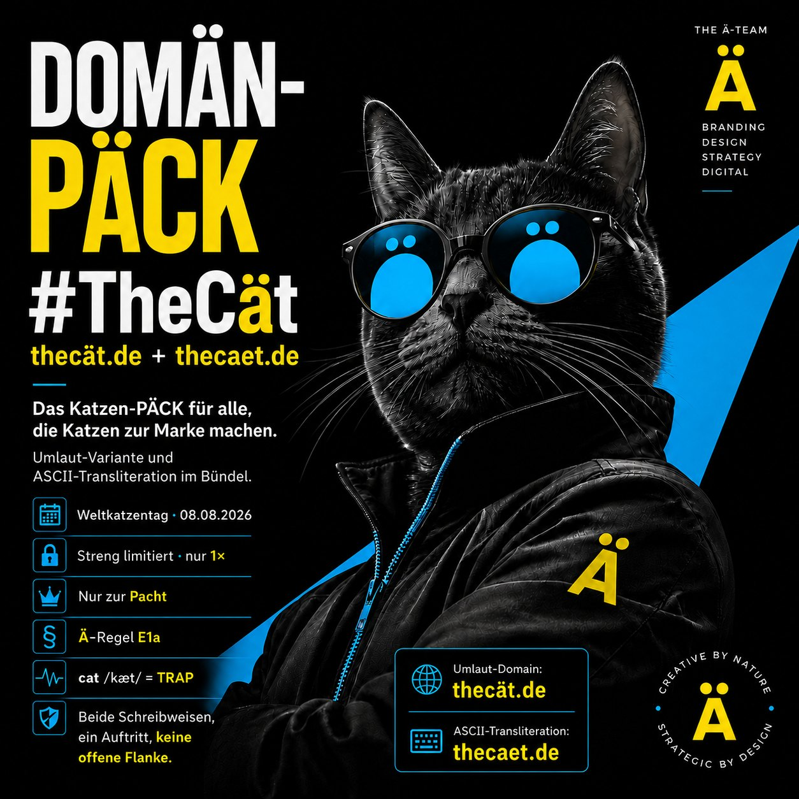

Am 8. August 2026 ist Weltkatzentag. Weltweit einer der reichweitenstärksten Anlässe des Jahres in sozialen Netzwerken, im Handel und in Redaktionen. Passend dazu gibt THE Ä-TEAM ein DOMÄN-PÄCK frei, das die Katze zur Marke macht: thecät.de und thecaet.de, Umlaut-Variante und internationale ASCII-Transliteration im Bündel.
Das Wichtigste in einem Satz
#TheCät ist zweierlei zugleich: ein Musterfall der Ä-Regel, weil das englische cat mit dem TRAP-Vokal /æ/ gesprochen wird, und ein Musterfall der Domain-Hygiene, weil erst beide Schreibweisen zusammen die Marke vollständig abdecken.

Warum ausgerechnet die Katze?
„thecät" liest sich als „the cat", schlicht, universell, weltweit sofort verständlich. Die Katze ist eines der reichweitenstärksten Motive des Internets: Katzen-Content zählt seit Jahren zu den meistgeteilten Inhalten in sozialen Netzwerken, und das Thema ist evergreen. Wenige Zeichen, klarer Klang, das Ä als optischer Anker. Das funktioniert als Hashtag, als Kampagnentitel und als Marken-URL gleichzeitig.
Warum das Ä hier lautlich exakt richtig steht
Das Ä ist bei THE Ä-TEAM keine Dekoration, sondern folgt einer festen Regel: Es steht nur dort, wo der Laut im Ausgangswort tatsächlich vorhanden ist. Das englische cat wird /kæt/ gesprochen, mit demselben kurzen TRAP-Vokal wie in land, band oder pack. Nach der Ä-Regel (Fall E1a) ist thecät damit phonetisch sauber, ohne Kompromiss.
Was im PÄCK steckt
- Umlaut-Domain:
thecät.de, die authentische Schreibweise für Website und Markenauftritt. - ASCII-Transliteration:
thecaet.de, die robuste Variante für E-Mail, Technik und Offline-Werbung. - Punycode (ACE-Form):
xn--thect-jra.de, die technische Entsprechung, die Browser und DNS automatisch verwenden. - Verfügbarkeit: streng limitiert, jedes DOMÄN-PÄCK existiert nur einmal.
Das Risiko, wenn nur eine Schreibweise gehalten wird
Jede Marke mit einem Umlaut existiert technisch in zwei Schreibweisen. Wer nur eine davon besitzt, lässt die andere offen. Daraus entstehen vier konkrete Risiken:
- Typosquatting. Dritte registrieren die freie Variante und profitieren vom fremden Namen.
- Phishing und Markenmissbrauch. Eine täuschend ähnliche Adresse wird für gefälschte Seiten genutzt.
- Business Email Compromise. Rechnungsbetrug über einen Absender, der fast richtig aussieht.
- Markenverwässerung. Uneinheitliche Schreibweisen schwächen die Wiedererkennung.
Beide Schreibweisen gemeinsam zu halten ist deshalb nicht nur eine Marken-, sondern auch eine Sicherheitsentscheidung. In der Informationssicherheit läuft das unter Domain-Hygiene und ist ein sinnvoller Baustein im Umfeld von ISO 27001 und NIS2.
Für wen #TheCät passt
Heimtierbedarf und Handel (Futter, Zubehör, Shops), Tiermedizin und Pflege (Praxen, Pensionen, Groomer), Tierschutz und NGOs (Vermittlung, Spendenkampagnen), Content und Community (Blogs, YouTube, TikTok, Merch), Marken und Kampagnen (Aktionen zum Weltkatzentag, limitierte Editionen) sowie Café und Lifestyle, etwa Katzencafés.
Konditionen: Pacht statt Kauf
Ein DOMÄN-PÄCK wird nicht verkauft, sondern verpachtet. Beide Schreibweisen bleiben dauerhaft im Bündel, Laufzeit und Umfang stimmen wir persönlich ab. Der Preis erfolgt auf Anfrage.
Häufige Fragen (THE FÄQ)
Was ist das DOMÄN-PÄCK #TheCät?
Das PÄCK besteht aus der Umlaut-Domain thecät.de und der ASCII-Transliteration thecaet.de. Beide Schreibweisen werden gebündelt zur Pacht überlassen, damit keine Tippvariante für Dritte offen bleibt.
Ist die Schreibweise thecät regelkonform?
Ja. Das englische cat wird /kæt/ gesprochen, mit dem kurzen TRAP-Vokal wie in land oder band. Ä steht hier lautlich exakt richtig, ein Musterfall der Ä-Regel (E1a).
Kann ich das PÄCK kaufen?
Nein. DOMÄN-PÄCKs werden ausschließlich zur Pacht überlassen, es findet kein Verkauf und keine Eigentumsübertragung statt. Der Preis erfolgt auf Anfrage.
Warum sollten beide Schreibweisen gesichert werden?
Wer nur eine Schreibweise hält, lässt die andere als Einfallstor für Typosquatting, Phishing und Business Email Compromise offen. Das Bündel schließt diese Lücke, ein Baustein der Domain-Hygiene nach ISO 27001 und NIS2.
Wie lautet die Punycode-Form von thecät.de?
Die technische ACE-Form lautet xn--thect-jra.de. Browser und DNS übersetzen die Umlaut-Schreibweise automatisch, davon merken Besucher nichts.
Fazit
Der Weltkatzentag ist der Anlass, die Idee dahinter gilt das ganze Jahr: Eine Marke gehört in allen relevanten Schreibweisen in eine Hand. #TheCät zeigt das im Kleinen, ein Wort, ein Laut, zwei Adressen, keine offene Flanke.
#TheCät anfragen Alle DOMÄN-PÄCKs ansehen
Dieser Beitrag dient der allgemeinen Information und stellt keine Rechtsberatung dar. Die Registrierung einer Domain begründet keine Markenrechte. Vor einer markenmäßigen Nutzung empfiehlt sich eine eigenständige markenrechtliche Prüfung, maßgeblich ist die aktuelle DENIC-Auskunft. THE Ä-TEAM hat keine Verbindung zur offiziellen THE LÄND-Kampagne des Landes Baden-Württemberg.